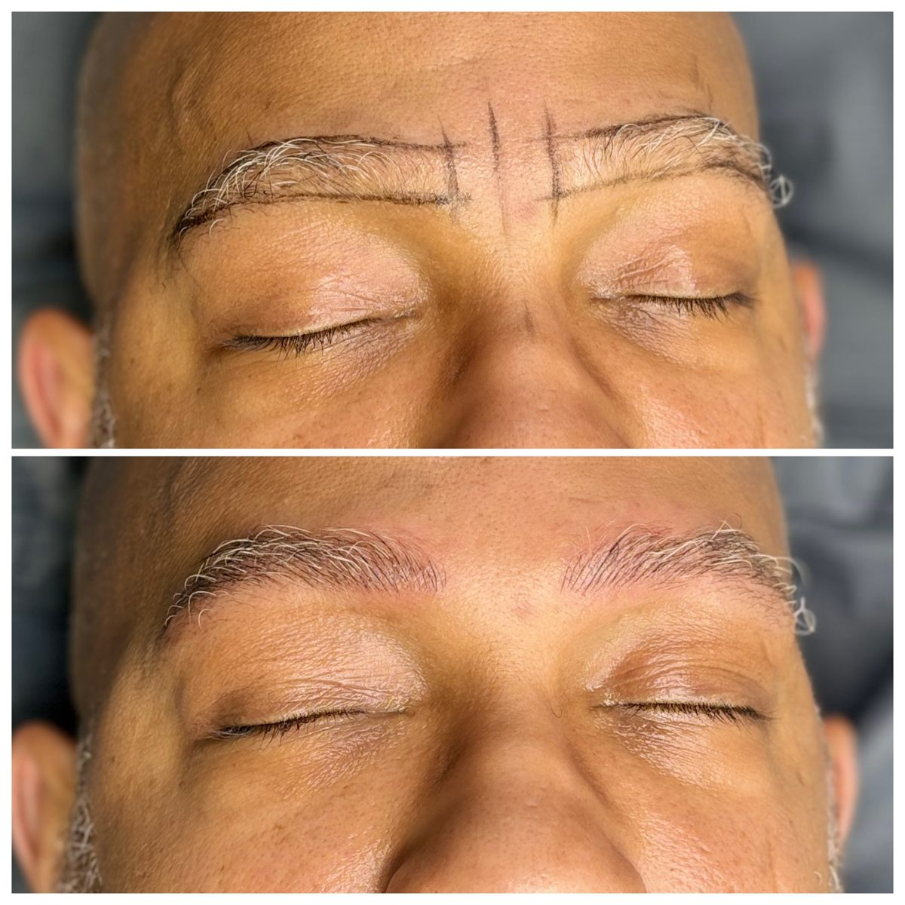
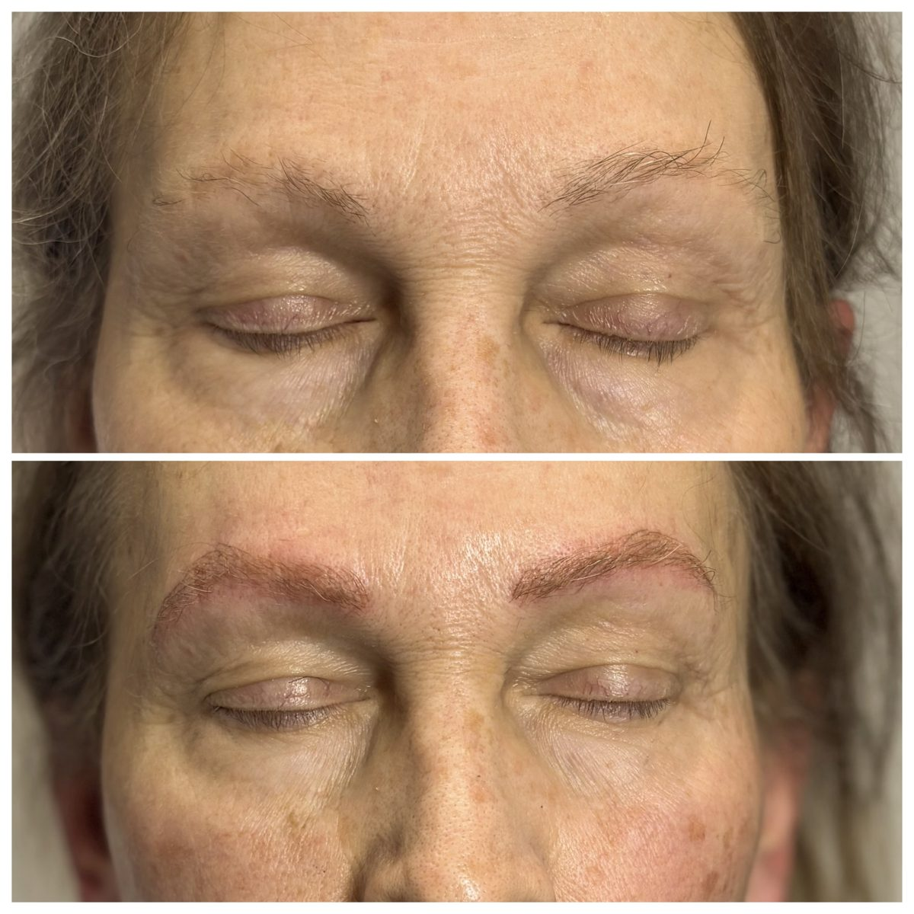

Eyelash extensions in Wilmington, DE
Professional eyelash extensions, done the right way.
Licensed esthetician Kelsey Tyre of K.A.T Eyes applies extensions that fit your natural lashes and your eye shape, in a private room inside the Delaware SMP studio.

Extension styles
Classic, hybrid or volume
Each style is applied differently, and the right one depends on your natural lashes. Here is the side by side.
| Style | How it's applied | Finished look | Best for |
|---|---|---|---|
| Classic | One extension on each natural lash | Defined, like great mascara | Fuller natural lashes, a natural look |
| Hybrid | Mix of single lashes and light fans | Textured and fuller | Something between natural and glam |
| Volume | Fine handmade fans on each natural lash | Soft, dark and full | Sparse lashes or a bolder look |
| Lash lift and tint | Your own lashes curled and darkened | Lifted and natural | Good natural length, low upkeep |
Your appointment
How a full set works
Consultation
Talk through the look you want, your eye shape and any sensitivities.
Lash mapping
Kelsey plans which lengths and curls go where across your lash line.
Application
You rest with your eyes closed while extensions go on one by one.
Fills
Come back every two to three weeks to replace what has shed.
Aftercare
Keep your set looking new
Do
- Keep lashes dry for the first 24 hours
- Clean them a few times a week with a lash safe cleanser
- Brush them out each morning
- Sleep on your back or on silk
- Book fills every two to three weeks
Don't
- Use oil based removers near your eyes
- Rub, pick or pull at your lashes
- Use a lash curler or mascara
- Hit the sauna or steam room the first day
- Try to remove extensions yourself

About your artist
Kelsey Tyre
Kelsey is a licensed esthetician and the owner of K.A.T Eyes LLC. She does lash extensions, lash lifts and tints, brows and permanent makeup, and she is also trained in scalp micropigmentation.
She works out of the Delaware SMP studio in Wilmington, a private clinic setting with no crowded salon floor.
Questions
Common questions
Do eyelash extensions hurt?
No. Your eyes stay closed and each extension attaches to a natural lash, not your skin.
Will extensions damage my natural lashes?
Not when the extensions are matched to the strength of your natural lashes and you follow aftercare. Problems usually come from extensions that are too heavy, lashes glued together, or picking.
How long does a full set take?
Plan on a good stretch of time for your first full set, since every lash is placed by hand. Kelsey will give you a time estimate when you book.
Can I wear mascara?
You won't need it, and mascara and oil based removers break down the bond. Skip both.
Do you offer anything without extensions?
Yes. A lash lift and tint curls and darkens your own lashes with no extensions and no fills.
Brows from our studio
Pair your lashes with brows that match. These were done at the Delaware SMP studio. Real clients, no stock photos in this section.


Recent work on Instagram
Kelsey posts her sets and process on Instagram. Follow @kat.eyes.bykels for her newest work.
Free consultation
Book your free consultation
Send this and Kelsey will reach out to set up a time. Prefer to talk now? Call or text Kelsey at 302-530-0442.
Our home studio
Find us inside Delaware SMP
Delaware Eyelash Extensions is part of the Delaware SMP studio at Heritage Plaza in Wilmington. Delaware SMP is known for scalp micropigmentation, and Kelsey handles lashes and brows in the same space.
- Lash and brow services with Kelsey Tyre of K.A.T Eyes
- Scalp micropigmentation for women with thinning hair
- Scalp micropigmentation for men with hair loss or scars
Delaware SMP
Heritage Plaza
2601 Annand Drive, Unit 16
Wilmington, DE 19808
Kelsey (call or text): 302-530-0442
Delaware SMP studio: 302-292-0380
Kelsey on Instagram: @kat.eyes.bykels